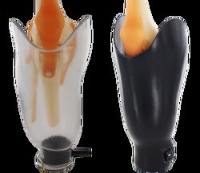

Prosthetic Services: Socket and Suspension
Socket Function, Comfort Largely Determine Prosthetic Success
 The prosthetic socket, essential point of integration between human tissue and replacement limb, is most often also the place where degree of prosthetic success is defined.
The prosthetic socket, essential point of integration between human tissue and replacement limb, is most often also the place where degree of prosthetic success is defined.
• It is the socket that accepts and transfers to the residual limb the stresses of weight-bearing, suspension and ambulation.
• It is the socket that encompasses and accommodates the often irregular and tender tissues of the residual limb and thereby helps determine how well, and for how long at a time, an amputee can function in the prosthesis.
• It is the socket that can, through intimate and comfortable fit, smoothly deliver the advanced gait performance promised by today’s sophisticated prosthetic componentry.
In other words, a prosthetic limb may incorporate the most sophisticated, technologically-advanced and expensive components available, but if the socket does not fit well and allow the residual limb anatomy to function to its capabilities, the result will be less than optimal, the user will not be happy, and the prosthesis may well stay in the closet.
For this reason, our prosthetic staff devotes paramount attention to designing and fabricating the best possible socket for each amputee we serve. Sockets are as unique as the people who wear them; no two are alike, but certain principles proven to enhance comfort and functionality are built into many current-day designs.
Total contact: Through careful creation and modification of a positive model of the residual limb, our prosthetic team forms the unique optimal socket shape for that individual. For most amputees, our goal is total contact between limb and socket. A total contact socket enhances venous return, limits edema and reddening/inflammation on the distal end of the anatomic limb, and helps distribute the load somewhat.
Total surface bearing: A total surface weight-bearing socket expands on this concept by distributing forces across the entire residual limb surface. Advantages include reduced pressure on any given limb tissues, better sensory feedback to the user, improved circulation and increased proprioception.
Reduced weight: Lightweight, high-strength sockets enable amputees to do more with less energy expenditure. One way this can be achieved is with a flexible inner socket within a laminated or rigid plastic outer frame. The outer frame covers the primary weight-bearing areas of the residual limb, while pressure-sensitive tissues and bony prominences are encompassed only by the softer inner socket.
Transtibial Sockets

Today’s below-knee sockets are of two primary types: The “old reliable” patellar tendon-bearing (PTB) design focuses weight-bearing stress on certain pressure-tolerant structures, such as the patellar tendon and medial tibia flare, and relieves pressure-sensitive areas. The PTB socket is still preferred by many patients, notably those with shorter or bony residual limbs. It generally is not a good choice for patients with residual limb scar tissue and/or chronic skin breakdown.
The principal alternative transtibial design is a total surface-bearing socket (TSB) with a gel interface of some type (silicone or polyurethane liner, gel socks, etc.), which spreads the pressure across the entire residual limb surface at a level comfortable for the wearer.
A hydrostatic weight-bearing socket is a specific version of the TSB design, cast in a compression environment to achieve uniform pressure distribution across residual limb tissues. This design encourages tissue elongation within the liner, increasing padding at the distal residual limb and reducing potential for skin breakdown.
Transfemoral Sockets
Contemporary above-knee designs typically employ some variety of ischial containment (I.C.) strategy, which has largely replaced the once-common quadrilateral (quad) shape. I.C. sockets feature a narrow medial-lateral dimension with the ischium encapsulated within the socket instead of sitting on the brim.
Quad sockets are still applicable for various patients, both for a preparatory prosthesis and as the socket of choice for patients who have worn a quad for many years and do not wish to change.
A particular I.C. design, the Marlo Anatomical Socket® (MAS), originally an effort to eliminate the socket brim outline clearly visible under the clothing of female above-knee amputees, also provides increased range of hip motion and may provide added comfort for appropriate patients.
Upper-Extremity Sockets
Upper-extremity prosthetic limbs are controlled by one of two primary methods: body-powered incorporating a harness and control cables, and externally (electrically) powered, typically with myoelectric control. Body-powered systems may be either harness-suspended, in which straps hold the prosthesis close to the body, or self-suspended, wherein the socket must be closely contoured to the residual limb to encompass bony anatomy or maintain suction. In either type, special care in designing and fabricating the socket is essential for maintaining control and suspension throughout the entire range of motion.
Regardless of limb or amputation level, all socket designs have benefits and drawbacks. Discerning and fabricating the best choice for any particular patient is accomplished only after thorough analysis of the individual’s physical condition and capabilities, clear understanding of his/her functional goals and careful anatomical measurements.
How the Prosthesis is Held Onto the Residual Limb - Suspension
Creating a prosthetic socket involves two major decisions: (1) the design and shape of the socket itself and (2) the method by which the prosthesis is held onto the residual limb, i.e., the suspension.
1) Suction Suspension
For appropriate patients, using an atmospheric vacuum to hold the residual limb in the socket can provide a superior outcome. Suction options, whether provided by “pure” suction or a roll-on liner, limit limb movement within the socket and provide the best level of proprioception and greatest range of motion among current suspension methods.
With pure suction precise socket fit enables residual limb skin to remain in full contact with the socket wall and thus preserve the vacuum created at donning. Donning typically involves actuating an expulsion valve at the distal end of the socket to evacuate air as the residual limb enters.
Contraindications to suction include bony or irregular residual limb contours, often encountered with transtibial amputation levels; significant residual limb volume fluctuation; residual limb skin challenges; and physical or mental impairment that interferes with donning or removing the socket.
Roll-on suspension liners can overcome most of these obstacles, protecting the residual limb from shear forces, providing an easier donning method, and compensating for irregular skin contours. “Cushion” liners can enhance a pure suction suspension and improve amputee comfort; more common are liners incorporating some type of locking device — locking pin and shuttle lock, lanyard or locking strap – to securely attach the liner to the socket.
Prefabricated liners, available in a variety of materials, designs, and sizes, will work for many patients, while custom liners can be created for patients with major residual limb issues or special needs.
Other suction suspension aids include elastic suspension sleeves, which cover the proximal end of a transtibial socket and extend over the knee to the thigh; and vacuum-assist, which sustains the negative pressure in the socket and helps compensate for residual limb volume fluctuations.
2) Anatomic Suspension
When suction methods prove unfeasible, suspension utilizing anatomic structures frequently provides a viable alternative, particularly in transtibial and knee disarticulation limbs.
Supracondylar suspension is accomplished by extended medial and lateral socket walls that fully encompass the femoral condyles and a compressible, contoured wedge that fits snugly above and against the medial condyle.
Other anatomic suspension options include constructions that take advantage of congenital protuberances, often involving a cutaway section of the socket and a “door” panel to ease donning and doffing that is applied after the residual limb is in place.
3) Straps, Belts and Hinges
When suction or anatomical suspension is unavailable, some older suspension methods may be employed. Strap suspension schemes, often used in combination with a waist belt, are relatively easy for the wearer to adjust and therefore are sometimes a good choice for individuals likely to encounter substantial changes in residual limb volume, as in the weeks after amputation surgery.
A suprapatellar cuff, which encircles the thigh over the femoral condyles and attaches to the socket with straps, may be a good choice for transtibial patients who have good knee stability. It is normally used with a waist belt. A thigh corset with metal side joints, may be prescribed for transtibial amputees with a delicate residual limb unable to withstand full weight-bearing loads.
For transfemoral amputees who cannot use suction, a silesian belt, total elastic suspension (TES) belt, or hip joint and pelvic belt may be used for suspending the prosthesis.
4) Elevated Vacuum Suspension
Elevated vacuum suspension systems manage limb volume fluctuation. When the limb volume increases, the socket becomes tighter, exerting pressure and restricting blood flow. When limb volume decreases, the socket is loose-fitting often causing pressure to bony prominences, which may result in pain and/or injury to the limb. One of the most important benefits of elevated vacuum suspension is that it maintains limb volume throughout the day. It also improves proprioception and gait.
Vacuum Suspension Systems Include:
• Harmony® System: Ottobock's Harmony® P3 vacuum system creates an optimal limb environment with an elevated vacuum between the liner and socket wall, promoting natural fluid exchange and a secure fit, plus internal and external rotation for easier maneuvering and shock absorption.
• Unity® Vacuum System: Össur’s Unity® Vacuum System offers the security and freedom of vacuum suspension but without the sensation and restrictions of a sleeve. It effectively addresses volume fluctuations and is totally compatible with Flex-Foot® technology. The Seal-In® liner technology is designed to conform to the residual limb, helping to distribute pressure evenly at the distal end, where volume fluctuations typically occur. The Unity is for above- and below-knee amputees, low active or high active, mechanical or microprocessor knee users.
• LimbLogic: WillowWood’s electronic elevated vacuum system continually monitors a socket’s vacuum level, maintaining a secure fit. Amputees may use a handheld fob to increase or decrease the vacuum level as desired within the range set by the clinician. Regardless of the style used, the LimbLogic Controller is waterproof in fresh water to a depth of 3 meters (10 feet) for up to 12 hours at a time. The handheld fob should not be exposed to water.